Same headline, same dock. What changes is how the page shows the thing it does: read one question and bring the right piece forward. Open a page and type into the field, or leave it alone and watch the sample questions type themselves.
Everything on the site as one quiet index. The question is the lens: the pieces it needs come forward, the rest step back, and a blue dot marks where the answer would open.
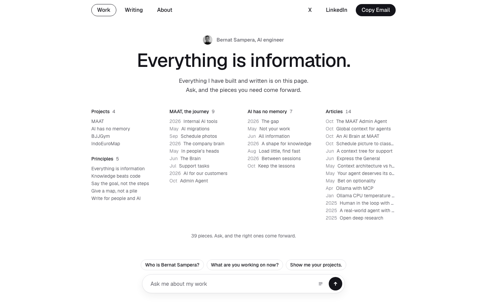
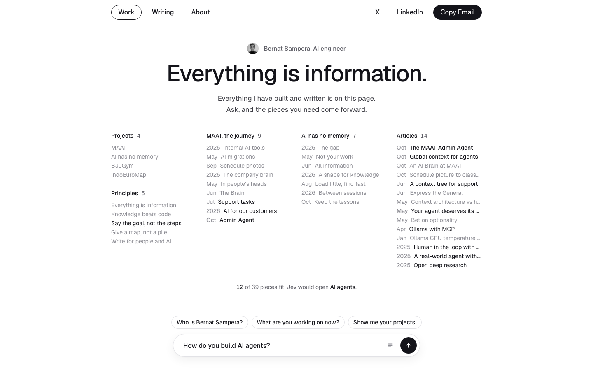
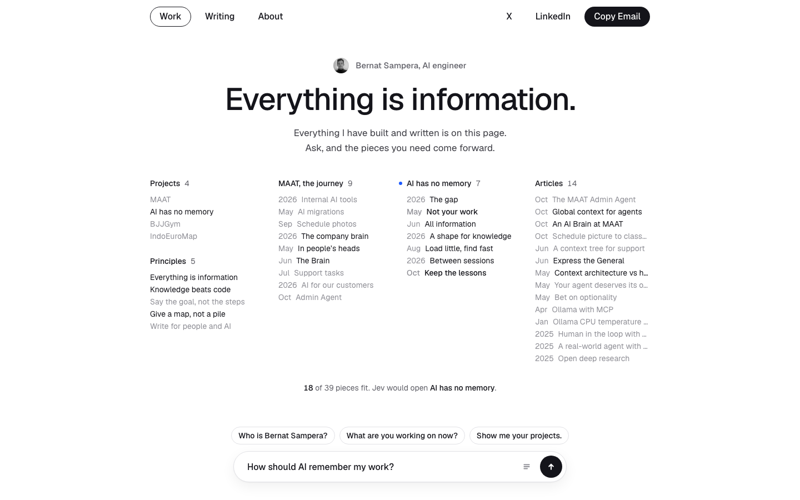
Eleven bars, one per prepared answer. They wave while the question is read, then settle on what it means. The winner turns blue, the close ones ink.
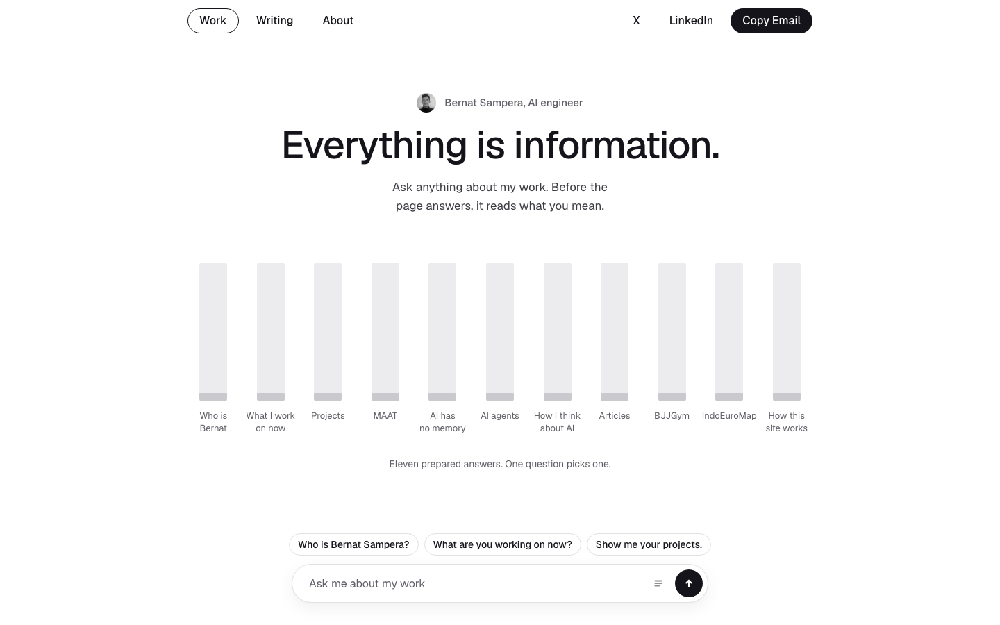
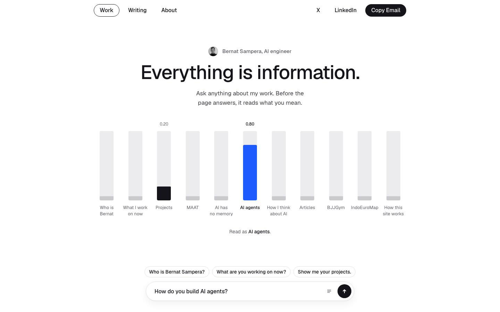
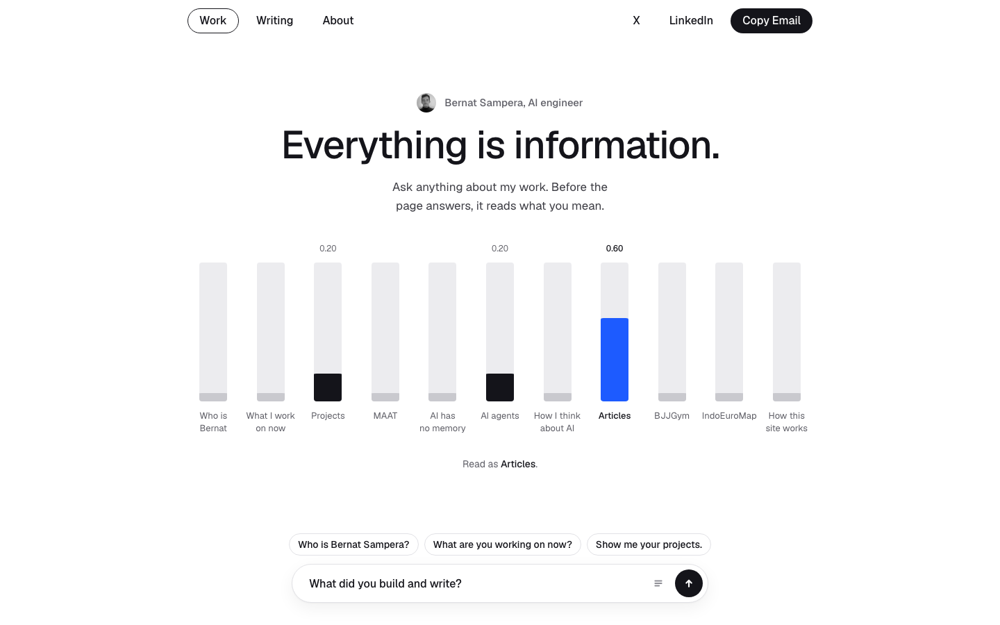
One question, eleven places it can go. The field is the start. The chosen path turns to ink and the blue marker travels it to the stop, in the same language as the story path: dotted ahead, solid behind, blue for now.
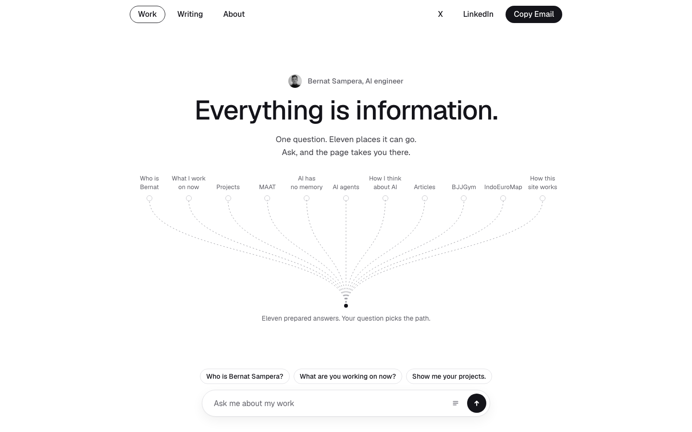
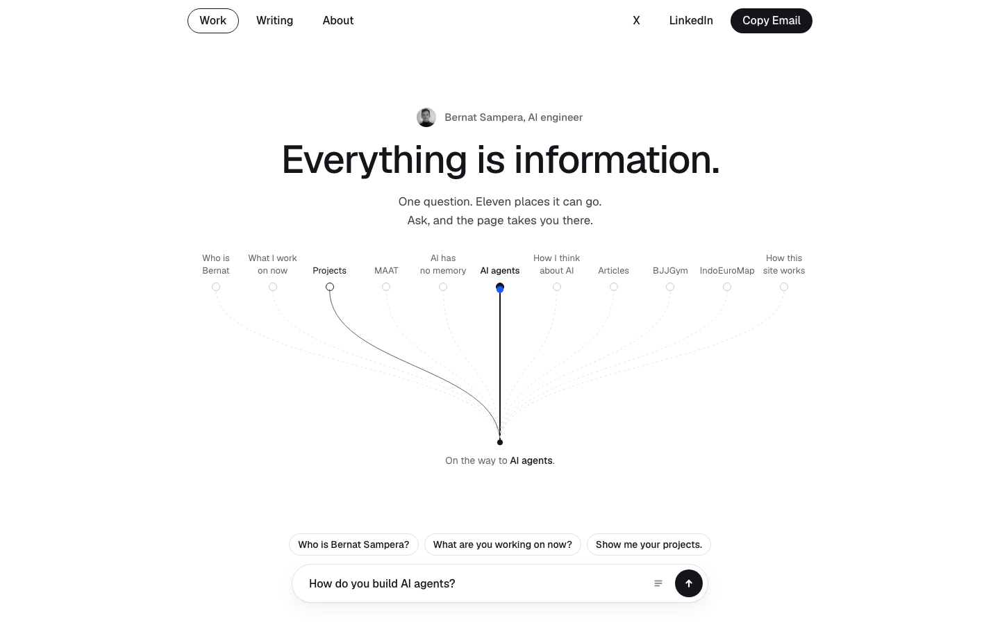
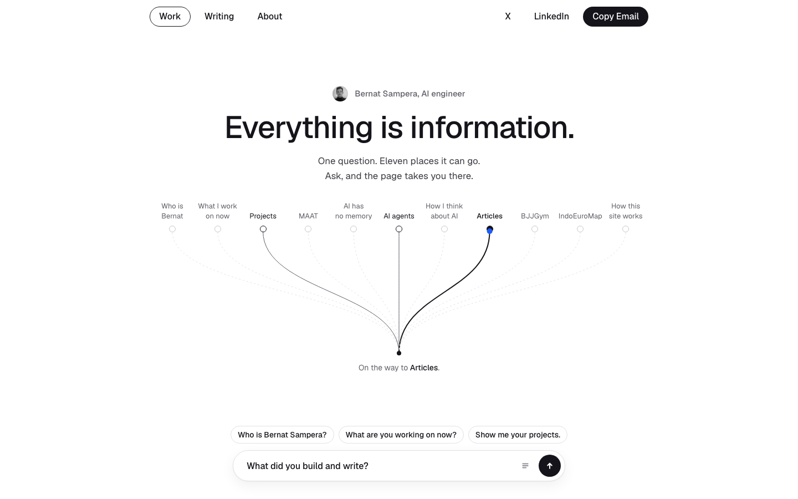
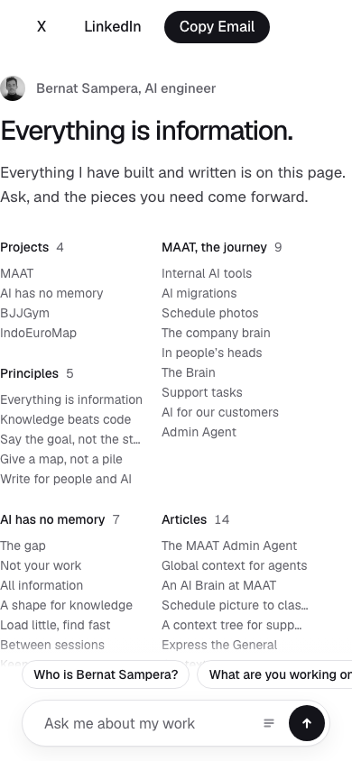
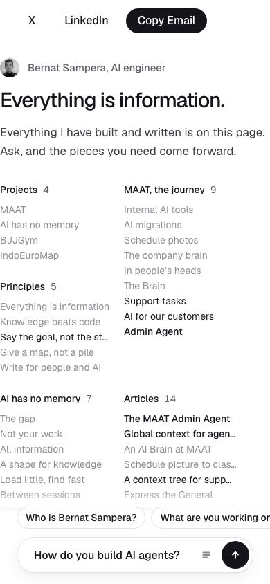
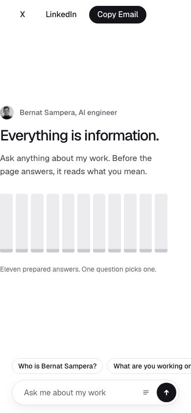
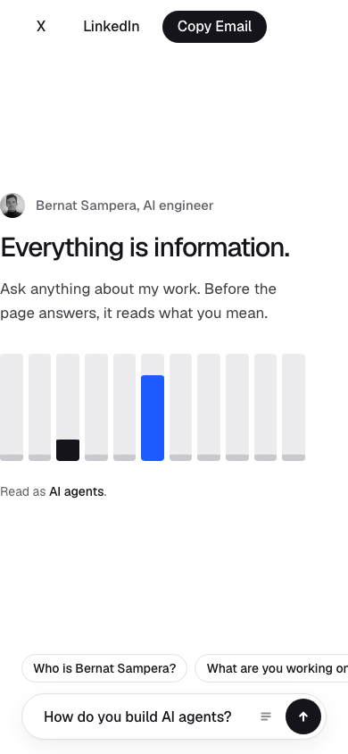
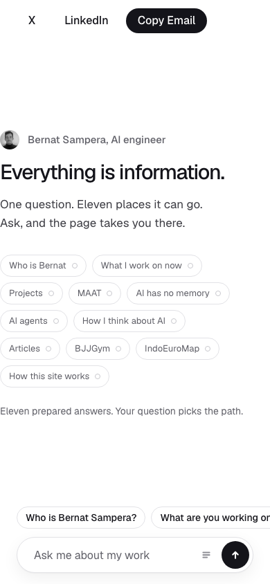